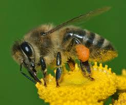

GO FIND ANIMALS
Recently, there's been a surge in young people not going outside much. This is a pretty bad thing, as it leads to overexposure to screens, lack of sunlight, and lower dopamine level. it also makes them blind to the interesting ecosystems that happen, and all the unique animals found within them. Discovering and finding animals has been a popular hobby, taking form in multiple different ways such as fishing and birdwatching. With the huge number of species worldwide, there are plenty of animals to try and find!

BUGS
Insects are not normally seen positively, being viewed by most people as pests and dangers. But beyond the spiders and snails everyone freaks out about, there are lots of wild and unique types of insects that are marvels to behold! From the buzzing bumblebee to the graceful grasshopper, lots of insects that can make you excited rather than scared exist! 

BIRDS
The least freaky out of the three, birds are adored worldwide for their vibrant and unique bodies alongside the cute noises they make. There are so many different types across the world, and watching them has become a very popular hobby in itself, with places to wtach birds worldwide. Spotting an uncommon bird is always a thrill!
FISH
A classic in the world of animal hunting, fishing was originally done by our ancestors as a source of food. Nowadays, it is done by massive ships to be sold off at markets, by some people looking to eat organic seafood or even just for fun to see what they can catch. There are massive fishing communities, with dedicated shops for fishing apparel and tons of material online for how and where to fish!